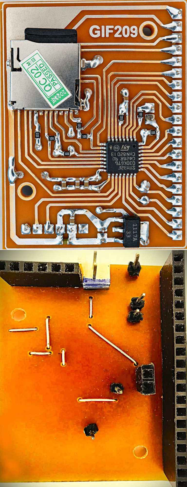

GIF209 v1.0
GIF209 is a professional, open-source hardware controller based on the STM32F030K6T6 ARM Cortex-M0 microcontroller. It is specifically designed to drive up to 19 independent WS2812/WS2811 LED strips and features standalone animation recording and playback via an SD card.



Hardware Specifications
| Feature | Specification |
|---|---|
| Microcontroller | STM32F030K6T6 (ARM Cortex-M0, 48 MHz, LQFP32) |
| Channels | 19 independent LED data lines (A1–A19) |
| Pixels per Channel | 100 by default (1,900 total). The protocol supports up to 256 (00–FF). |
| Storage | SD Card via SPI1 (Raw access, no filesystem) |
| Communication | Bluetooth HC-05 (UART, 115200 baud; set the module with AT+UART=115200,0,0) |
| Supported LEDs | WS2812, WS2812B, WS2811, WS2813, WS2815 |
Why 100 pixels? The channels are sent one after another, so more pixels per channel means a lower frame rate. The limit is set to 100 (STRIP_LEN in main.c) to avoid frame drops on this microcontroller, and it is enough for normal displays. If speed is not critical for you, or if you migrate to a faster processor, you can change STRIP_LEN from 100 up to 256. After the change, check the RAM usage of the build: the STM32F030K6 has only 4 KB of RAM. Large banners need a stronger microcontroller and modified code.
Pinout & Channel Map
Channels follow the physical pin order of the LQFP32 package to make PCB routing easier: channel 1 starts at pin 21 and runs up to pin 30 (channel 10), then continues from pin 2 (channel 11) up to pin 18 (channel 19).
- Channel 1–2: PA11 (Pin 21), PA12 (Pin 22)
- Channel 3–4: PA13 (Pin 23), PA14 (Pin 24) — the former SWD pins
- Channel 5: PA15 (Pin 25)
- Channel 6–10: PB3 (Pin 26), PB4 (Pin 27), PB5 (Pin 28), PB6 (Pin 29), PB7 (Pin 30)
- Channel 11–12: PF0 (Pin 2), PF1 (Pin 3)
- Channel 13–16: PA0 (Pin 6), PA1 (Pin 7), PA2 (Pin 8), PA3 (Pin 9)
- Channel 17–18: PB0 (Pin 14), PB1 (Pin 15)
- Channel 19: PA8 (Pin 18)
Reserved Pins:
- SD Card: PA4 (CS), PA5 (SCK), PA6 (MISO), PA7 (MOSI)
- Bluetooth: PA9 (TX), PA10 (RX)
- Boot jumper: BOOT0 (Pin 31), used for flashing (see below)
Getting Started & Bluetooth Speed Setup
The firmware talks to the Bluetooth module at a fixed UART speed, set by UART_BAUD at the top of main.c (default 115200). The module must use exactly the same speed. Most modules ship at 9600, so the speeds have to be matched once before the first connection.
The speed of a module cannot be changed over its own Bluetooth link. Use a 3.3V USB-to-serial adapter connected directly to the module.
Option A: Quick start (no module configuration)
If your module is still at the factory speed of 9600, change one line in main.c and flash:
#define UART_BAUD 9600u
Everything works the same, only sending long animations takes longer than at 115200.
Option B: Set the module to 115200 (recommended)
- Connect the module to the USB-to-serial adapter (not to the GIF209 board): adapter TX to module RX, adapter RX to module TX, GND to GND, and power at 3.3V.
- Open a serial terminal at the current speed of the module with the line ending from the table below.
- Send the command from the last column of the table. The module answers
OK(or a similar reply). - Power-cycle the module so the new speed is used.
- Make sure
UART_BAUDinmain.cis115200u, flash the firmware, then connect the module to the board.
| Module | Type | Factory speed | How to enter AT mode | Line ending | Set 115200 |
|---|---|---|---|---|---|
| HC-05 | Classic SPP | 9600 (AT mode: 38400) | KEY/EN pin high (3.3V) at power-up | CR + LF | AT+UART=115200,0,0 |
| HC-06 | Classic SPP | 9600 | Any time while not paired | None | AT+BAUD8 |
| JDY-31 | Classic SPP | 9600 | Any time while not connected | CR + LF | AT+BAUD8 |
| JDY-33 | SPP + BLE | 9600 | Any time while not connected | CR + LF | AT+BAUD8 |
| JDY-23 | BLE 5.0 | 9600 | Any time while not connected | CR + LF | AT+BAUD8 |
- HC-05: the AT mode always runs at 38400, whatever the data speed is. After setting the speed, power the module again without the KEY pin. Never put 5V on the KEY pin.
- HC-06: commands are uppercase and sent without a line ending. The module has a very short timeout, so send the whole command at once.
- JDY-31: a bare
ATgets no answer. Test withAT+VERSIONinstead. If the new speed does not apply, power-cycle the module. - JDY-33: its manual says continuous data above 38400 baud is not guaranteed. If frames get lost, use
AT+BAUD6(38400) and setUART_BAUDto38400u. - JDY-23: some units answer only to set commands, not to queries such as
AT+BAUD.
The values come from the module datasheets. Clones can differ, so check the datasheet of your own module if a command is not accepted.
First connection
- Wire the module to the board: module TX to PA10, module RX to PA9. Remove the BOOT jumper and power the board.
- Classic SPP modules (HC-05, HC-06, JDY-31, JDY-33): pair them from your phone or PC (the PIN is usually 1234) and open a Bluetooth serial terminal app. BLE modules (JDY-23, or JDY-33 in BLE mode): connect from a BLE serial terminal app, no pairing in the system settings. iPhones support only the BLE type.
- Send
INFO. The controller answers with its status (frames=.. ch=..). - Send
01FF00000005waitas one line. The first 6 LEDs of channel 1 should turn red and the controller answersnext. - Use the Web Application below to generate full animations.
Nothing happens?
The most common reason is a speed mismatch between the module and UART_BAUD. Also check that module TX goes to PA10 and module RX goes to PA9, and that the line ending of your terminal is set to newline.
Command Protocol
Commands are sent via Bluetooth as plain text. Every line must end with a newline character (\n or \r\n). The controller acknowledges most commands with next for flow control.
1. Pixel Data (ARGBSE)
To control LEDs, send a 12-character hex string representing 6 variables:
A R G B S E
| Variable | Meaning | Range | Hex Range |
|---|---|---|---|
| A | Channel Address | 1 – 19 | 01 – 13 |
| R | Red Intensity | 0 – 255 | 00 – FF |
| G | Green Intensity | 0 – 255 | 00 – FF |
| B | Blue Intensity | 0 – 255 | 00 – FF |
| S | Start Pixel | 0 – 255 | 00 – FF |
| E | End Pixel | 0 – 255 | 00 – FF |
Example: 01FF00000005 sets Channel 1, pixels 0 to 5, to Red (FF0000).
2. Control Commands
| Command | Description | Response |
|---|---|---|
wait | Clears untouched channels (used as a frame separator) | next |
wait=N | Clears untouched channels and waits N milliseconds | next |
REC | Starts recording frames to the SD card | REC OK, then next |
END | Stops recording and saves the header | SAVED n, then next |
PLAY | Plays the recorded frames once | PLAY DONE, then next |
LOOP | Plays the recorded frames continuously (loop) | No reply while looping (it runs until STOP) |
STOP | Stops playback or recording immediately | STOPPED, then next |
AUTO=0 | Enables auto-loop on boot (Default) | OK AUTO=0, then next |
AUTO=1 | Disables auto-loop (waits for user command) | OK AUTO=1, then next |
ERASE | Clears the recording header (frames=0) | ERASED, then next |
INFO | Shows current status (frames, channels, delay, auto) | frames=.. ch=.., then next |
DUMP | Sends raw data of all stored frames to terminal (for debugging) | HDR raw:..., then next |
DUMP=N | Sends the raw data of frame number N only (for debugging) | HDR raw:..., then next |
CH=N | Sets the number of active channels (1 – 19) and saves it on the SD card | OK CH=N, then next |
DELAY=N | Sets the default delay between frames in milliseconds (used when a frame has no wait=N) and saves it on the SD card | OK DELAY=N, then next |
Web Application
The GIF209 Web App allows you to convert images or draw custom pixel art, and then generate the exact hex commands needed for the controller. It automatically handles the REC and END wrappers and formats everything perfectly.
🎞️ GIF import: drop an animated GIF into the app and it is split into frames automatically. Each frame becomes one line of commands, and the GIF frame delays can be converted to wait=N.
- Split GIF into frames: turns the GIF into one frame per line.
- Every Nth: keeps only every Nth frame to make long GIFs shorter (1 = all frames).
- Use GIF delays as wait: uses the delay of each GIF frame as
wait=N.
GIF splitting needs a browser with ImageDecoder support (Chrome or Edge). In other browsers the GIF is added as a still image.
Using the Web App inside SoifGo: two ways to send
The same GIF209 web app can be used in SoifGo in two different ways. Both end with the same result: the hex commands reach the microcontroller over Bluetooth, one line at a time, and the microcontroller answers next after every line.
| Method 1: Note out | Method 2: Direct send | |
|---|---|---|
| Button behavior | Note | Browser or HTML File (HTML file / Offline) |
| Web app opened from | The Note menu (GIF209, at the end of the list) | The WebView itself (from the Samples list) |
| Send button in the app | 📝 Send (puts the code into the Note) | Direct with the Bluetooth icon (sends straight to Bluetooth) |
| Who sends the lines | The Note, with Export (Bluetooth Send) | The web app, with the SoifGo Bluetooth bridge |
| Best for | Saving, editing and archiving the code | Quick and simple sending |
Method 1: Note out (through a Note)
To use this method, the button behavior must be set to Note. Set up the Bluetooth sending once, then open the web app from the Note menu.
- Set the button behavior to Note, and bring the Note into Play mode.
- From the Note menu choose Note out, then choose Bluetooth Send. The Export option now appears in green at the top of the page.
- Long-press Export to open the Bluetooth Send options and set them like this:
- Send lines: Auto
- Bluetooth receive on next (the
nextword feedback): ON. This must be on. - Delay: 0
- Loop is not needed here, because the microcontroller repeats the animation by itself when it receives the word
LOOPat the end of the code.
- Open the Note menu, scroll to the end of the list and tap GIF209, then tap Edit. The GIF209 web app opens with three tabs: Image Converter, Pixel Editor and Text & FX. Each tab has its own tools.
- After you finish your design, scroll to the end of the page and tap 📝 Send to place the generated code into the Note.
- Close the web app with the yellow X to go back to the Note.
- Tap Export at the top of the page to start sending the data to the microcontroller over Bluetooth. Watch the percentage: you may need to tap Export several times until the progress reaches the end.
Why use it: the code lives in the Note as plain text, so you have full control over it:
- You can edit the lines by hand and set the
wait=Ndelays yourself. - The Note files are saved in the SoifGo / Note folder of the phone. You can archive them, back them up and copy them to a computer, edit them there with any other tool, and bring them back.
- Because the file is kept, you can send the same animation again later without opening the web app.
Method 2: Direct send (straight to Bluetooth)
Here the web app runs inside a normal SoifGo WebView button, with no Note. Use the Direct button, which sends the code straight to Bluetooth.
- Select a button and set its behavior to Browser or HTML File, then choose HTML file (Offline).
- In the list of reload options choose Samples, then choose GIF209.
- Go to Play and make sure the Bluetooth module is connected.
- Tap the button. The GIF209 web app opens in the WebView.
- Design your animation (Image Converter, Pixel Editor or Text & FX). When it is ready, scroll to the end of the page and tap Direct (the button with the Bluetooth icon) instead of Send.
- The app sends the code to the microcontroller line by line. After every line it waits for the word
nextfrom the microcontroller, then sends the following line. A progress bar and the number of the current line are shown, and the button changes to Stop, so you can stop the transfer at any time.
Why use it: it is the easiest way. There are no Note settings, no Export and no need to tap several times: one tap and the code is on its way.
The transfer stops with a message if next does not arrive within about 10 seconds (for example when Bluetooth is disconnected) or if the controller reports an error such as write error or SD not ready. When the code ends with LOOP, the app finishes right after sending it, because the controller then plays in a loop until it receives STOP.
This method needs firmware that answers next after every line, including STOP, REC and END. This is already described in the Command Protocol table above.
Why two methods?
Note out gives you more control and flexibility. You can set the waits by hand, edit the files, change them on a computer, and keep them: the Notes in the SoifGo / Note folder can be archived, saved and backed up. Archiving and backup are part of what Note out is made for.
Direct send makes the work simpler. It sends to Bluetooth straight from the web app and avoids the extra steps and the complexity of Note out.
Choose Note out when you want to keep, edit or reuse the code. Choose Direct send when you just want to send the animation quickly.
WS2811 strips
With WS2811 strips, two colors (green and blue) can appear swapped compared to the design. This is normal for this type of strip and is not a fault, so there is nothing to worry about. In the web app inside SoifGo (with either method), simply tick the RBG (WS2811) option so the generated file matches your strip, then send it again.
Safety Warning
⚠️ Important Notice
1. The SD card is accessed in RAW mode. The controller does not need a filesystem and writes sectors starting around 2000, so any data already on the card will be damaged, and after use your computer may not read the card and may ask to format it. Always use a spare or blank SD card. As a precaution, format the card once as FAT32 on a computer before first use, so it is in a standard state that other systems can recognize. This is only a precaution and is not required by the firmware.
2. The STM32 outputs 3.3V logic, while 5V LED strips (WS2812B) officially expect a higher input level (about 70% of the supply, i.e. 3.5V). In practice most strips work fine when connected directly with a short data wire and a common ground, and GIF209 has been tested this way. A logic level converter (like 74HCT245 or 74HCT125) is only needed when you notice problems, for example a long data cable, flickering or wrong colors on the first LEDs, or a strip that does not accept 3.3V. GIF209 aims for simplicity and avoiding unnecessary hardware complexity. If you see a need for extra caution or have a different opinion, the Proteus project file is open and available: modify it and apply whatever protection or parts you prefer.
3. LED power: the 5V input (J6) feeds the 3.3V regulator and the Bluetooth module. With 5V strips you can use the same 5V supply for the board and the strips (size it for your strips: up to about 60 mA per pixel at full white), with a common GND. With 12V strips, never connect 12V to J6: give the board its own 5V (a separate supply, a buck converter or a regulator from the 12V), power the strips from the 12V, and connect all grounds together.
Flashing the Firmware (Boot Jumper)
The two SWD programming pins (PA13 and PA14) are used as LED outputs on this board. A few microseconds after start the firmware turns them into GPIO outputs, so a programmer can no longer see the chip while the firmware is running, and live debugging through SWD is not available. To flash, the chip must be kept in its built-in bootloader: the BOOT0 pin is held high during reset. This is the job of the BOOT jumper. In this mode the firmware does not run and the SWD pins stay available. You can then flash in either of two ways.
Method 1: ST-LINK V2 (SWD)
- Connect the ST-LINK V2 to the J2 header on the board: SWDIO, SWCLK, RESET, GND and 3.3V.
- Flash mode: connect (install) the BOOT jumper, then power the board or press reset.
- Flash the compiled firmware from STM32CubeIDE or STM32CubeProgrammer (SWD mode).
- Normal mode: remove the BOOT jumper and the programmer, and reset the board so the firmware starts.
Method 2: USB-to-serial adapter (UART)
- Disconnect the Bluetooth module (it shares PA9/PA10), and connect a 3.3V USB-to-serial adapter: adapter TX to PA10 (RX), adapter RX to PA9 (TX), and GND to GND.
- Flash mode: connect (install) the BOOT jumper, then power the board or press reset.
- Flash the compiled firmware with a UART bootloader tool such as STM32CubeProgrammer (UART mode) or stm32flash.
- Normal mode: remove the BOOT jumper, reconnect the Bluetooth module, and reset the board so the firmware starts.
Important: if the BOOT jumper stays connected, the board will enter the bootloader on every reset and the LEDs will not work. Always remove the jumper after flashing.
GIF209 Build Steps
Watch the step-by-step build of the GIF209 module: PCB assembly, wiring, SD card, Bluetooth setup and flashing the firmware.
YouTube version (with subtitles): https://youtu.be/NytcNm8YBQc
Downloads
Get the source code, PCB schematics, and the latest firmware updates from the repository.
📦 Download ALL_File.zipLicense: free to use, modify and share, with no restrictions and no follow-up. The only requirement is to credit the source (GIF209, Saeid Moghadam).